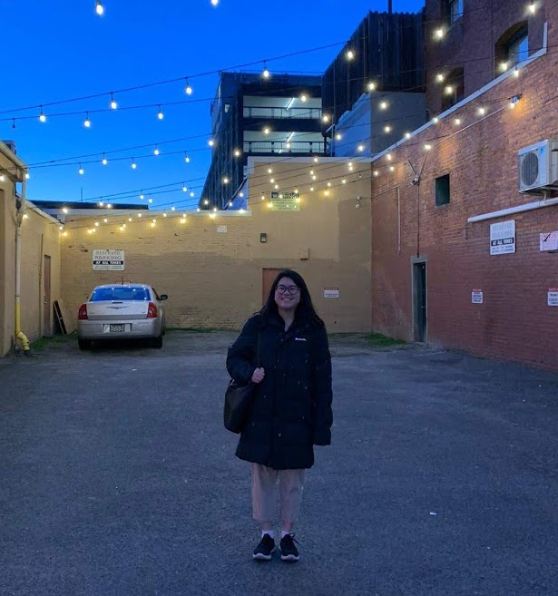

Throughout my years as a student, I was incredibly indecisive about what I wanted to study, even choosing a program that offered two degrees: mathematics and business, since there were aspects of both disciplines that interested me.
Eventually, I would also add computer science to that list after taking my first few programming courses and loving the subject.
When I was finally introduced to data science and analytics, I was ecstatic to find that it blends all my favourite subjects together.
When I completed my first data science project, involving web-scraping visual properties from thousands of websites and blogs in hopes of finding patterns and insights from the data, I realized that there was so much more we could learn from all the data in this world.
Ever since, I have been trying to learn as much as I can about the subject while improving my data science skillset, hoping to be able to uncover more interesting findings in our world's data.
I am currently a student in the Professional Master's of Computing Science specializing in Big Data at Simon Fraser University in Burnaby, British Columbia and will be graduating in April 2021.
When I'm not thinking about data, you can find me delving into my other interests such as painting, playing video games, or improving my musical skills through piano and acoustic guitar.
For any inquiries, please reach me via LinkedIn or email.